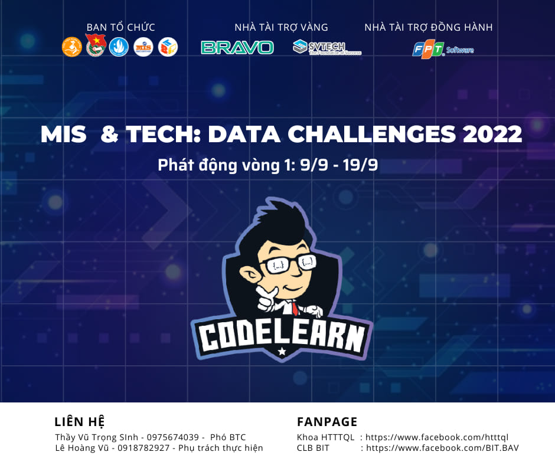

MIS & TECH - DATA CHALLENGES
✨ MIS & TECH - DATA CHALLENGES là một cuộc thi đầy hấp dẫn và ý nghĩa dành cho các bạn sinh viên toàn Học viện, lần đầu tiên được tổ chức bởi Liên chi Đoàn Khoa Hệ thống thông tin quản lý phối hợp cùng CLB Tin học Ngân hàng BIT - BAV. 🌟 Cuộc thi là sân chơi trí tuệ, nơi các bạn trẻ đam mê dữ liệu có thể thử sức, khám phá tiềm năng và tỏa sáng. 💡
🎯 Ngay từ lần đầu tổ chức, MIS & TECH - DATA CHALLENGES đã thu hút sự chú ý lớn từ cộng đồng sinh viên. Với hàng loạt đội thi tài năng, những bài toán thực tế đầy thách thức 🧩 và sự hướng dẫn tận tình từ các chuyên gia trong lĩnh vực dữ liệu 📊, chương trình đã thực sự để lại dấu ấn mạnh mẽ.
🌱 Không chỉ là một cuộc thi, sự kiện còn đánh dấu bước trưởng thành vượt bậc của CLB BIT cả về chuyên môn lẫn khả năng tổ chức. 💼 Đây là minh chứng rõ ràng cho sự phát triển không ngừng nghỉ của CLB trong việc mang đến những sân chơi bổ ích và cơ hội học hỏi, giao lưu cho các bạn sinh viên. 🚀
🎉 MIS & TECH - DATA CHALLENGES hứa hẹn sẽ tiếp tục mở rộng quy mô và nâng tầm chất lượng trong các năm tới, góp phần xây dựng một cộng đồng sinh viên đam mê công nghệ, giàu tri thức và luôn sẵn sàng đón nhận những thử thách mới. 🌈
❤️ Hãy cùng đồng hành và chờ đợi những chương trình đầy thú vị và ý nghĩa tiếp theo từ BIT nhé! 🤝